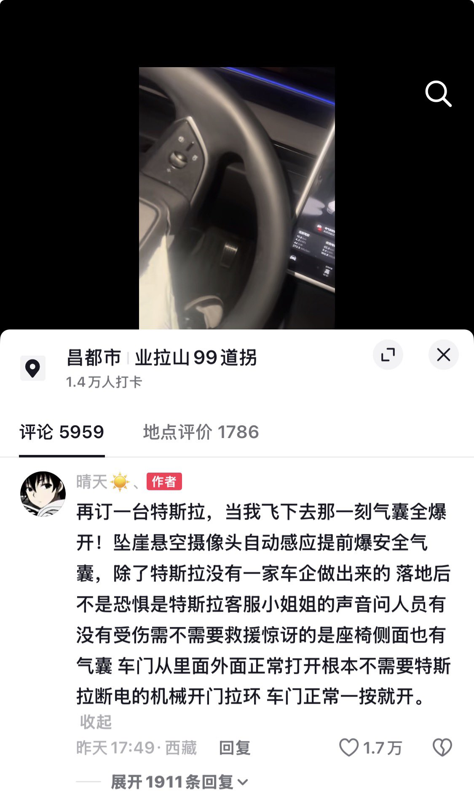

索瑟尔 𝓢𝓸𝓻𝓬𝓮𝓻𝓮𝓻🍥🏳️⚧️
@Sorcerer198964
@CharlesXBoy 电车西藏自驾？

𝐶ℎ𝑎𝑟𝑙𝑒𝑠
@CharlesXBoy
Danny Duncan这个“特斯拉推下悬崖、气囊空中打开”的测试，昨天被一名在中国西藏自驾的特斯拉车主真实体验到了
“再订一台特斯拉，当我飞下去那一刻气囊全爆开！坠崖悬空摄像头自动感应提前爆安全气囊，除了特斯拉没有一家车企做出来的 https://t.co/eYzAcFX9QH https://t.co/mjWkxQR5W0